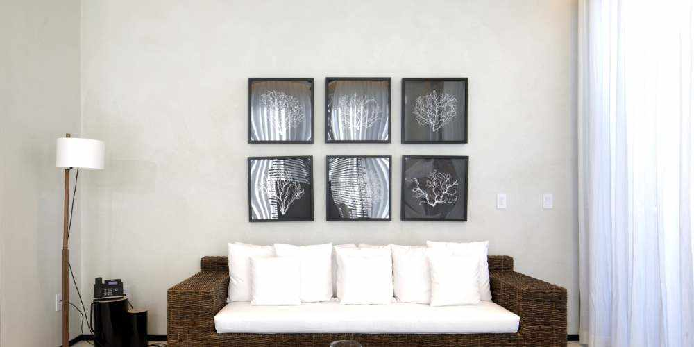
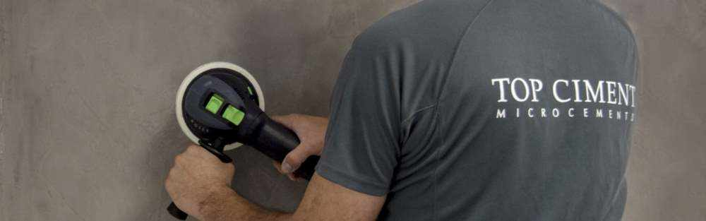
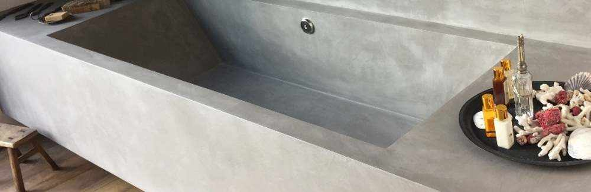
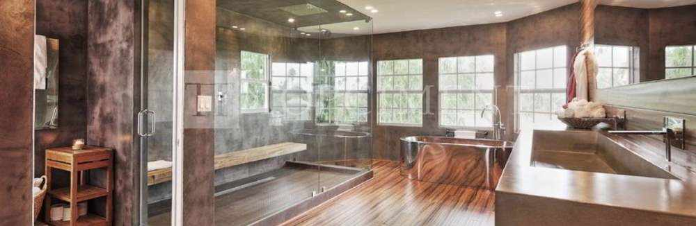
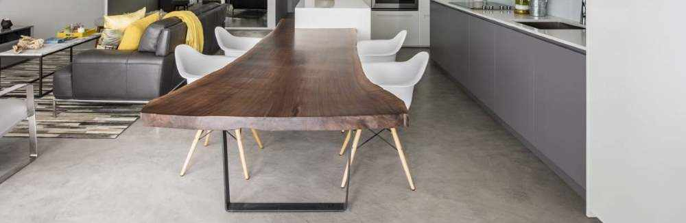
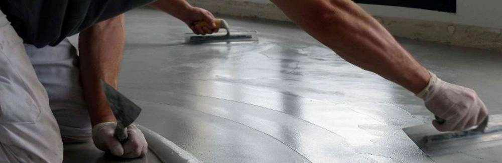
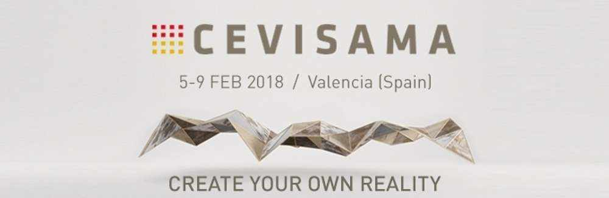
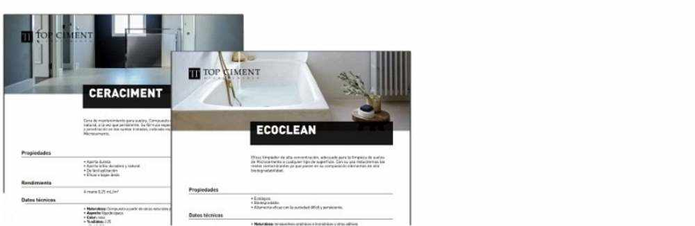

Reformar tu casa sin obras y en poco tiempo es posible 16/11/2020

Han pasado ya unos cuantos años desde que te compraste tu casa con toda la ilusión del mundo, sin embargo el paso del tiempo ha hecho estragos. Con el microcemento de Topciment, revestimiento decorativo de altas pretaciones podrás reformar tu casa sin obras y en poco tiempo.
6 razones por las que los baños de microcemento serán tendencia en 2021 2/11/2020

Si estás pensando en renovar o agrandar el baño en los próximos
meses este artículo es para ti. Los baños de microcemento,
revestimiento decorativo de altas prestaciones, serán tendencia
en 2021. Conoce las 6 razones por las que los baños de
microcemento se pondrán de moda en 2021.
8 motivos por los que el microcemento es el futuro de las reformas 13/10/2020

El microcemento es el revestimiento decorativo del presente, pero
sobre todo del futuro, ya que sus múltiples ventajas frente a
otros materiales lo convierten en idóneo para la creación de
todo tipo de espacios y estilos. A continuación te explicamos
los principales beneficios del microcemento que te enamorarán y
con la que lograrás la casa de tus sueños.
Piscinas de microcemento, la mejor opción posible 2/10/2020
Tener piscina propia suele ser uno de los sueños más recurrentes. Y es que ¿quién no querría estar todo el día en remojo o en el césped de su casa tomando tranquilamente el sol? Y, si queremos lo mejor, una piscina de microcemento es la opción perfecta.
La casa más famosa en redes sociales está diseñada con Topciment 26/08/2020
 - copia.jpg)
El arquitecto Carles Faus ha diseñado la casa más viral del
momento: una preciosa vivienda ubicada en Denia que destaca por
su luminosidad y su efecto de continuidad gracias a la
aplicación del microcemento.
Ya somos marca registrada en China y Rusia 22/06/2020
Nuestra marca TT Topciment ha sido registrada en China y en Rusia
por la Organización Mundial de la Propiedad Intelectual
(OMPI).
¡Nuevo barniz sellador antideslizante! 30/03/2020

Topsealer WT Ansti Slip se une a la familia de barnices
selladores para ofrecer un producto clave para superficices de
microcemento: el sellador antideslizante.
¡Topciment cambia de imagen! 13/01/2020

Desde Topciment hemos decidido dar un paso más en cuanto a diseño
se
refiere y hemos
actualizado nuestra imagen y la estética de nuestros cubos.
Presentamos nuestra
gama de
productos Sttandard , misma calidad y
prestaciones,
pero con una imagen
renovada mucho más
visual y actual, siempre sin perder la esencia Topciment.
¡Topciment presenta Efectto! 13/01/2020

Topciment presenta Efectto , la nueva línea de revestimientos continuos y listos al uso de alta decoración.
Efectto es una gama de productos muy amplia y con gran variedad de acabados que se irán desvelando en los próximos meses. El primero de estos nuevos productos en ver la luz es Efectto Quartz.
Leer másPrecio del microcemento 13/01/2020

Solo un aplicador profesional de microcemento conoce con exactitud sus precios por m2 (desplazamiento, material, valor de su trabajo, dificultad de la obra, etc…).
Leer más¿Encimeras de cocina con microcemento?13/01/2020

Existen múltiples tipos de materiales para las encimeras de cocina, más baratos y más caros, pero el microcemento Topciment es una opción diferente a todas las soluciones del mercado. Te contamos todo aquí para que elijas la encimera de cocina perfecta: resistente, higiénica, de fácil limpieza y mantenimiento.
Leer másDiseño y confort para espacios exteriores13/01/2020
Topciment presenta la solución más actual para exteriores, terrazas, balcones y patios, el microcemento para exteriores Microstone . Es el producto más innovador en los revestimientos decorativos continuos porque consigue un entorno limpio, agradable y vanguardista.
Leer másEnsayos y certificación AIDIMME 13/01/2020
Los ensayos de certificación realizados por AIDIMME consisten en reproducir las condiciones a las que pueden ser expuestos los productos y ver cómo responden. Los laboratorios de AIDIMME están acreditados por ENAC y otras entidades de ámbito internacional como ISTA.
Leer másRevestimiento de paredes 13/01/2020

El Revestimiento de las paredes en algunas de las habitaciones, o de toda la vivienda, nos da calidad y un resultado estético y duradero, en especial en paredes que exigen una higiene y limpieza constantes, como pueden ser las de cocina o el baño.
Leer másTopciment recomienda Festool para una aplicación perfecta 13/01/2020

Una buena aplicación de microcemento está condicionada por varios factores, contar con unos productos de calidad, la técnica de aplicación, pero también que utilice las mejores herramientas.
Leer más5 Claves para un reforma de éxito en los cuartos de baño 13/01/2020

Pasamos mucho tiempo en el cuarto de baño y no siempre le damos importancia. Por eso, aquí tienes 5 claves para reformar tu baño con éxito y otorgarle el estilo y la decoración que merece.
Leer más5 Errores a evitar en la combinación de colores 13/01/2020

En Topciment os proponemos algunos trucos para acertar de lleno a la hora de redefinir los diferentes espacios de la vivienda.
Microcemento en cocinas13/01/2020

El microcemento es un material neutro que combina en cualquier tipo de cocina, desde opciones clásicas a contemporáneas, pasando por industriales y nórdicas.
Leer másMicrocemento sin problemas 13/01/2020

¿Como evitar problemas con el microcemento? Una aplicación con productos Topciment garantiza productos de la mejor calidad, aplicadores certificados y expertos en microcemento
Leer másTopciment confirma su participación en Cevisama 2018 en FeriaValencia 13/01/2020

El equipo de Topciment se encontrará en Cevisama 2018 en FeriaValencia a disposición de todo aquel que quiera resolver sus dudas en. Le facilitamos un link para que pueda obtener la entrada gratuita y acceder al recinto sin colas.
Leer másNuevos productos para el mantenimiento del microcemento 13/01/2020

Topciment lanza al mercado cuatro nuevos productos especialmente formulados para el cuidado, mantenimiento y limpieza del microcemento..
Topciment renueva un año más con CYPE13/01/2020
Topciment ha renovado un año más con Cype y con este acuerdo,se seguirá dando servicio a los profesionales de la construcción en materia de elaboración de presupuestos de obras con microcemento.
Leer másResbaladicidad 13/01/2020
pruebas de resbaladicidad del microcemento en el único laboratorio de ensayos de España especializado en este campo